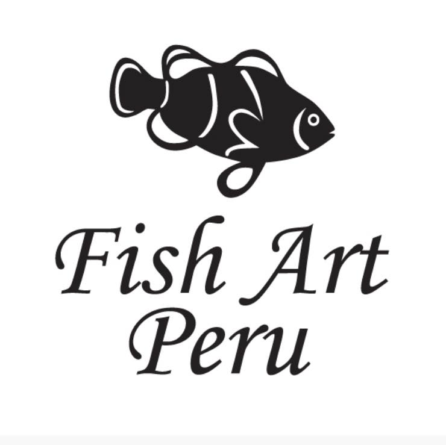

Bandejas de cuero de pescado revestidas en acrílico
Utiliza estas bandejas de diseño único y exclusivo para tu familia e invitados.
Bienvenidos a nuestro catálogo de artesanías exclusivas hechas de cuero de pescado.
En FISH ART, somos productores de artículos para el hogar hechos a partir de cuero de pescado. Nuestra misión es formar parte de una economía circular, transformando materiales orgánicos reciclados en productos hermosos y funcionales. Nos apasiona crear piezas únicas que no solo embellecen tu hogar, sino que también promueven la sostenibilidad y el respeto por el medio ambiente. Todo nuestro proceso de producción se enfoca en reducir el impacto ambiental, utilizamos cuero de pescado fusionado con madera, vidrio, metal y otros materiales. Hecho en el Perú.

Utiliza estas bandejas de diseño único y exclusivo para tu familia e invitados.

Aqui puedes colocar quesos, piqueos y canapes, así como podrás cortar sobre las tablas.
Queda regio con los salseros hechos a mano, únicos en su clase!
Visítanos en nuestra página web www.fishart.pe y en nuestras redes
Teléfono: 999 999 999